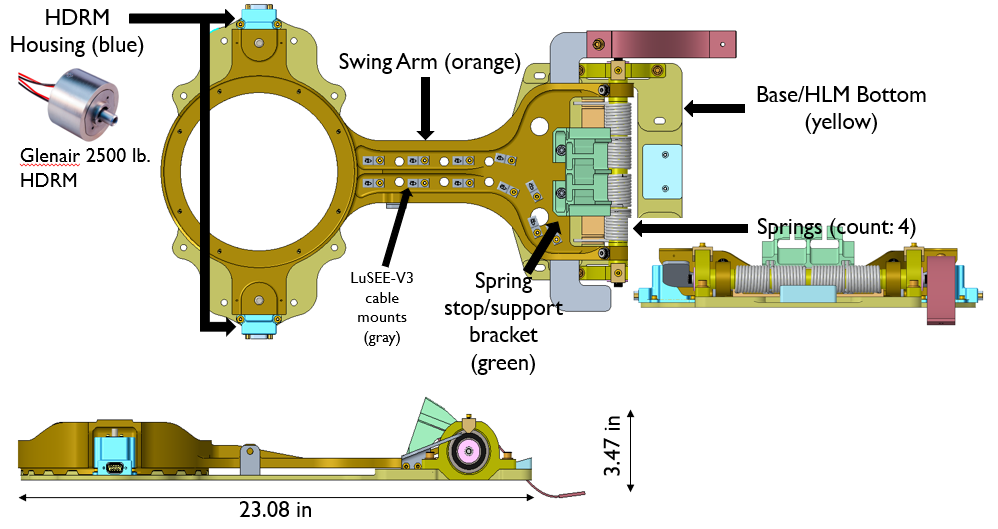

NASA Ames Research Center
At NASA Ames Research Center, I contributed to the development and testing of a Hinged Layover Mechanism (HLM) for the Commercial Lunar Payload Services (CLPS) program. The HLM was designed to support deployment of the Lunar Surface Electromagnetics Experiment (LuSEE-V3) antenna on Draper’s SERIES-2 lunar lander. Its purpose was to isolate the antenna’s resonant response from the sensitive seismic instruments onboard, ensuring both payloads could perform without interference once deployed on the lunar surface.
My role focused on designing, fabricating, and testing support hardware that simulated the antenna and its mechanical environment. One of my first tasks was building a stowed antenna simulator, a welded aluminum structure with matched mass and center of gravity, used to replicate flight-like loading during vibration tests.
I also developed a vibration test fixture for the mechanism. This consisted of a precision-milled aluminum plate with cutouts that reduced parasitic resonance while keeping the fixture stiff enough to transmit vibration accurately. The fixture allowed the team to verify that the mechanism could withstand the launch environment. This test fixxture also doubled as an adapter plate to a tilted test rig that reduced effective loading on the mechanism.
To simulate the hold-down and release functions of flight hardware, I fabricated a mechanical release simulator. This was a clamp-like device that replicated the functions of a Hold-Down and Release Mechanism (HDRM), giving engineers a safe and low-cost way to verify clearances and deployment dynamics before the flight hardware arrived. This creative approach allowed the team to model how the antenna would behave under lunar weight without the need for specialized equipment.
For tip-mass testing, I created a 3D-printed simulator of the LuSEE-V3 sensor housing. The printed model was dimensionally accurate and mass-adjusted, allowing the team to perform repeated handling and mounting checks without risking damage to sensitive flight hardware.
This work gave me direct experience in mechanical design for mission-critical hardware, from CAD and machining through welding, 3D printing, and test execution. I learned the importance of designing fixtures that not only replicate real-world conditions but also simplify the testing process, helping ensure payloads survive launch and operate reliably in one of the harshest environments known.